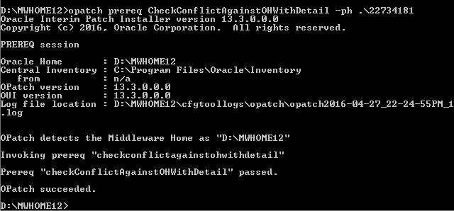
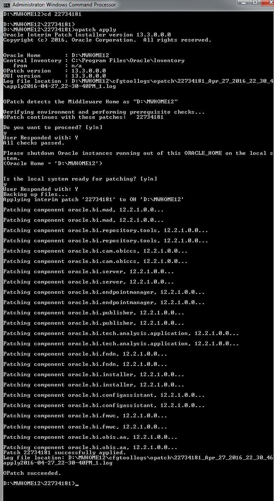

[点击上方 BI实验室 ↑↑↑，可快速关注]
首先下载补丁文件，然后安装里面的readme文件进行操作。
readme.txt 可参见：
https://updates.oracle.com/Orion/Services/download?type=readme&aru=20111444
我的obi 安装在 ：
D:\MWHOME12
并且已经设置为环境变量 Oracle_Home 的值。
不过，通常的安装路径是：Oracle/Middleware/Oracle_Home
步骤1: 停止 OBI服务，例如：
\user_projects\domains\ \bitools\bin
执行：
stop.cmd
对于我来说，是：
D:\MWHOME12\user_projects\domains\bi\bitools\bin\
然后：
stop.cmd
步骤2:
解压patch 补丁文件到 ： oracle_home目录下：
比如：
d:\MWHOME12\22734181
步骤3:
在命令行环境中设置环境变量：
cd Oracle\Middleware\Oracle_Home
set ORACLE_HOME=C:\Oracle\Middleware\Oracle_Home
set PATH=%ORACLE_HOME%\bin;%PATH%
set JAVA_HOME=%ORACLE_HOME%\oracle_common\jdk
set PATH=%JAVA_HOME%\bin;%PATH%
set PATH=%ORACLE_HOME%\OPatch;%PATH%
请注意根据实际情况修改，比如JAVA_HOME 变量。跟readme中的可能不一样哦。
比如我的：
```
cd D:\MWHOME12
set ORACLE_HOME=D:\MWHOME12
set PATH=%ORACLE_HOME%\bin;%PATH%
set JAVA_HOME=%ORACLE_HOME%\oracle_common\jdk
set PATH=%JAVA_HOME%\bin;%PATH%
set PATH=%ORACLE_HOME%\OPatch;%PATH%
```
unix 下 ， 如果你的是 c shell , 要这么设置：
``` setenv ORACLE_HOME $PWD setenv PATH $ORACLE_HOME/bin:$PATH setenv JAVA_HOME $ORACLE_HOME/oracle_common/jdk setenv PATH $JAVA_HOME/bin:$PATH setenv PATH $ORACLE_HOME/OPatch:$PATH
```
步骤4:执行冲突检查：
opatch prereq CheckConflictAgainstOHWithDetail -ph .\22734181

在这里我们假设通过检查。然后执行后续。(如果不通过，请具体问题具体分析！)
步骤5: 安装补丁
```
cd 22734181 opatch apply
```
根据提示回答 yes

步骤6: 启动服务
\user_projects\domains\ \bitools\bin start.cmd
以我的为例：
CD D:\MWHOME12\user_projects\domains\bi\bitools\bin\
start.cmd
注意事项：
- 这个补丁不针对 admin tool 的问题提供补丁方案。
- 应用补丁之后， obi 版本号似乎没有变化。
本文首发于微信公众号： BI实验室 ，微信搜索 BI实验室 或 magicof01 ，也可以扫描下方二维码快速关注哦！